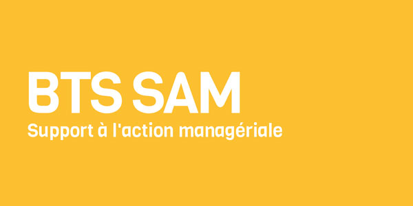
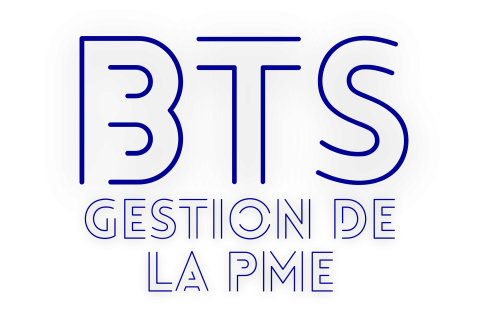
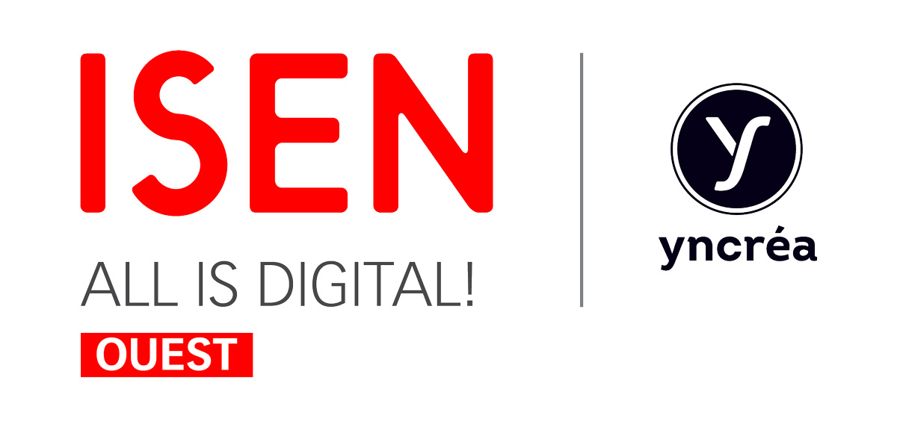

Informatique
Pourquoi choisir une formation BTS ?
- Diplôme d’état
- Formation courte : 2 ans
- Formation professionnelle (Stages > 10 sem.)
- Taux d’insertion élevé
- Poursuite d’études possible
Pourquoi le lycée Notre-Dame de la Providence ?
Le Lycée NDLP propose des parcours personnalisés pour chaque étudiant :
- L'Option Alternance dès la 2ème année pour tous les BTS
- L'Option Prépa École d'ingénieur intégrée au BTS SIO
- L'Option Certification TOEFL disponible pour tous

Management
Commerce
Ingénierie
Langues